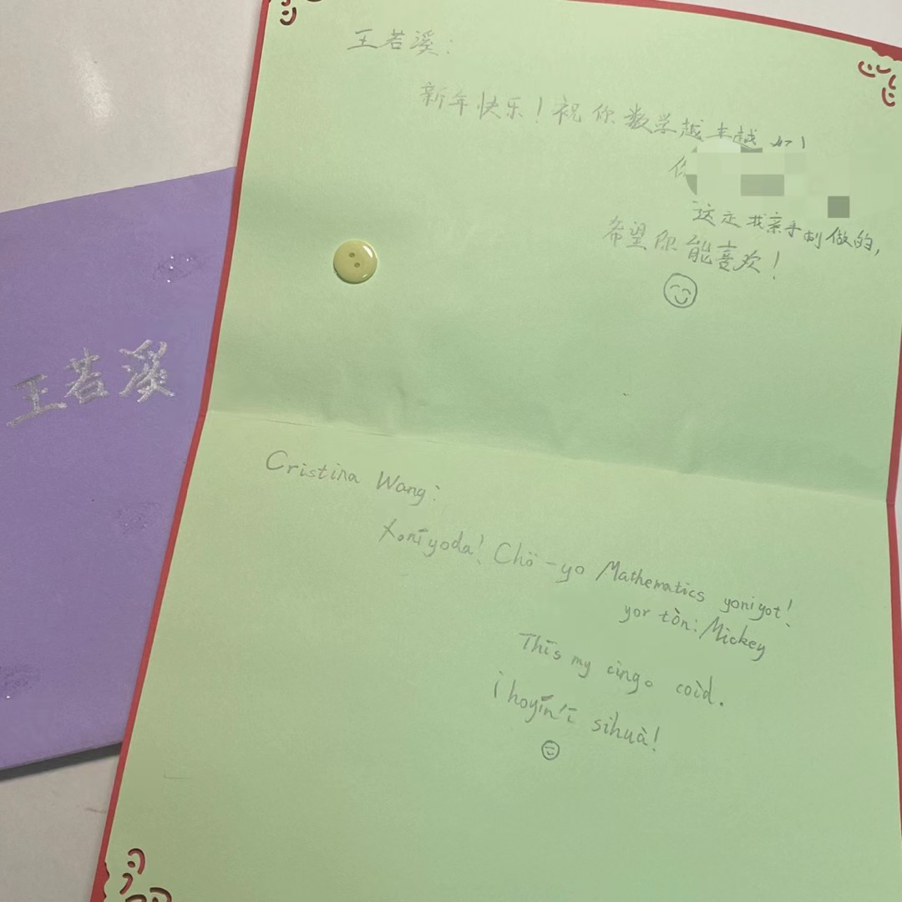

The brown plastic Triceratops in my hand was scratched and faded. His name was Trike, and I’d found him in a plastic box under a utility pole in the small park behind my school—a hiding spot known only to us geocachers. I typed Trike’s code from his metal tag into my phone, and a story unfolded on the screen: he was a birthday gift for a two-year-old boy in Cyprus back in 2009.
As he rested in my palm, I thought of the oceans he had crossed, the hands he’d passed through—much smaller than mine—and the sixteen years it had taken him to reach me. His original owner would be close to my age now. Stroking the worn surface, I felt a strange stirring in my chest—an invisible thread forming, linking our two lives across distance and time.
This is the allure of Geocaching: each cache is a vessel for dialogue, whispered across years and continents.
I first sensed this mysterious connection when I was six, in my mother’s hometown of Urumqi. At a kebab shop outside Hongshan Park, I stood entranced before a Uyghur noticeboard. The curling, unfamiliar characters beckoned like incantations from another world. On a napkin, I copied them one by one, trying to capture their call. Of course, I failed—not only because the script was unknown to me, but because I had unknowingly written every character backwards. Yet even in failure, I discovered something more lasting: the irresistible urge to reach across the gap of language.
That urge grew into invention: in third grade, I created my own tongue, Wanzi Language (“Meatball Language” in Chinese). A friend recently sent me a photo of the New Year’s card I’d once given him:
Xonīyoda! Chö-yo Mathematics yoniyot!
Thīs my cingo coìd.
¡Hoyín’ī sihuà!

Even today, I can still recall Wanzi’s grammar—twenty-seven letters, improvised syllables, rules half-remembered. The card’s message was simple: “Happy New Year! Wishing you progress in math! This is made by my own hands. Hope you like it!”
But for me, words were never enough. A language deserved a world; thus, the Kingdom of Wanzi was born: seven provinces, a national flag, and even an official exchange rate. I rearranged a piano piece I was learning and declared it the national anthem, and before practice, I played it solemnly as a tribute to my imagined republic. With friends, I compiled a trilingual Chinese-English-Wanzi dictionary for encrypted notes, drew comics of Wanzi’s heroes, and spun tales of endless adventures on our walks home.
Years later, rereading that card, I realized it was never about the mechanics of grammar but the joy of creation, the laughter of shared secrets, and the desire to give a whole world to my friends. Beneath it all was the same yearning: to connect, to communicate, to build meaning together.
And that’s what I still do.
In the linguistics club I founded, the roster lists seventy members, but only a handful are deeply devoted. They’re more than enough. We argue late into the night about vowel harmony in Turkic languages; we cheer when we decipher Tangut idioms; we shared quiet awe when we discovered that the Turkish tek (“single”) shares its root with the Chinese character zhī. In these moments, we revel in distant civilizations speaking again, like long-buried fossils of human thought uncovered.